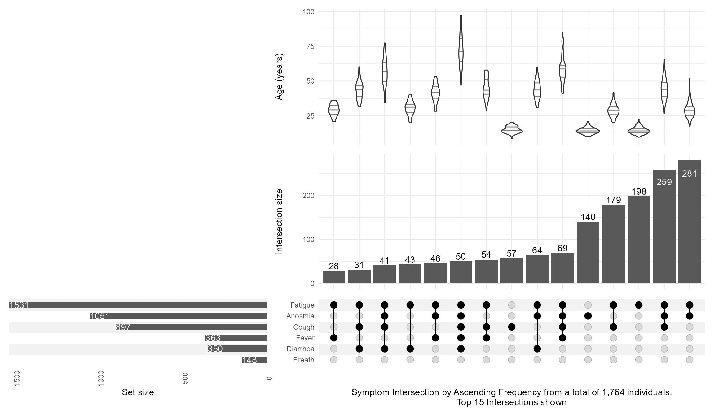
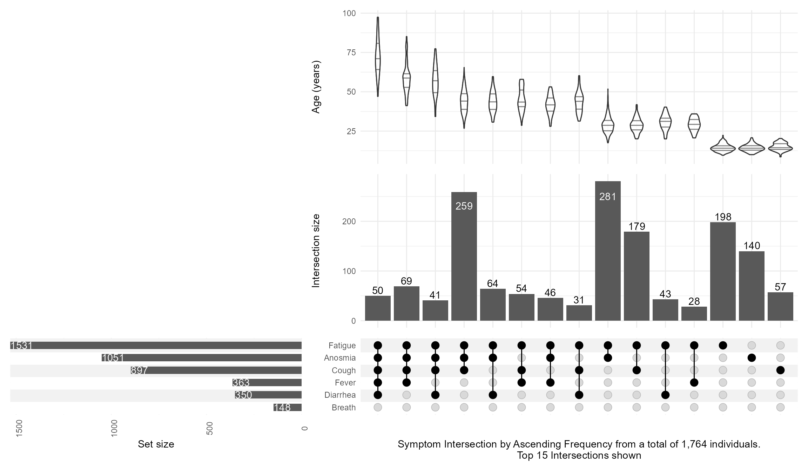
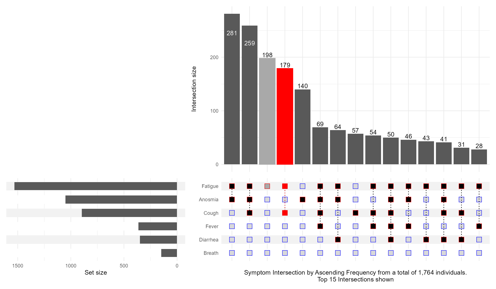
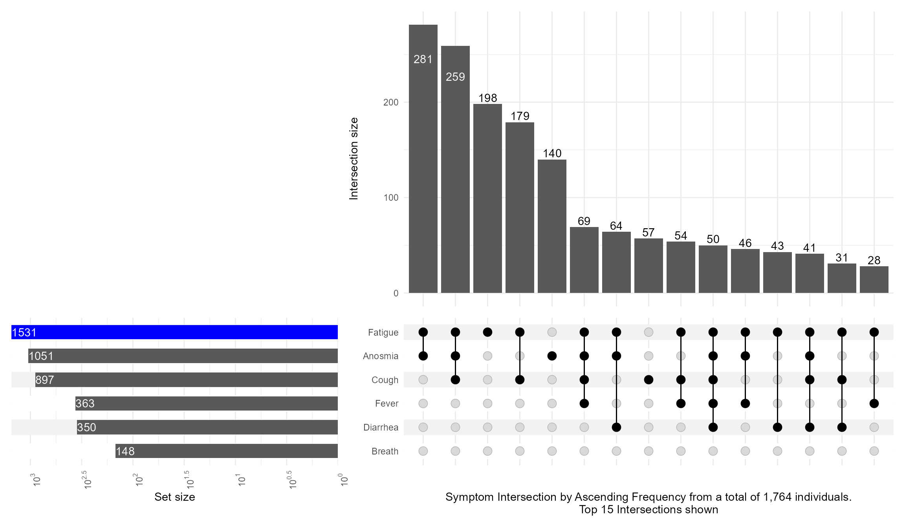

During PAGE 2024, I presented with one of my former colleagues a poster on Upset Plots. I am revisiting this cool way to visualize and present intersections of data when we have many possibilities. I will focus on one of the examples on COVID-19 symptoms, demonstrating some useful features, merely scratching the surface of what Upset Plots can do. For more details on the methodology refer to this website https://upset.app/. The original authors also provide a web-app.
First, I read in the data, do some data management, and simulate an artificial age column that is a function of the number of symptoms to illustrate how we can annotate these plots with continuous variables.
Also using the ggVennDiagram which requires a specific format for the input data. Notice how this is at the edge of Venn diagrams and where it is very hard to see and appriciate all the intersections!
Then, I keep the top 15 intersections with n_intersections=15, add an annotation of age with a violin distribution per intersection, and customize the set_sizes with text showing the total N, and flipping the order by using sort_intersections=ascending
Code
upsetplot <-upset(data = symptom_expand, intersect = symptoms, annotations =list('age'=(ggplot(mapping=aes(x=intersection,y=age))+geom_violin(alpha=0.5, na.rm=TRUE,quantile.linetype ="solid")+scale_y_continuous(name="Age (years)") ) ),set_sizes=(upset_set_size()+geom_text(aes(label=..count..), hjust=0, stat='count',col="white")+theme(axis.text.x=element_text(angle=90))+scale_x_continuous(expand=expansion(add =0, mult =0))+scale_y_reverse(expand =expansion(add =0, mult =0)) ),keep_empty_groups=TRUE,width_ratio=0.4,n_intersections=15,sort_intersections='ascending',#sort_intersections_by=c('degree', 'cardinality'),name="Symptom Intersection by Ascending Frequency from a total of 1,764 individuals.\nTop 15 Intersections shown", )upsetplot

And then switching the sort_intersections_by to degree then cardinality which will reveal that age is linearly related to the number of concomitant symptoms present:
Code
upsetplot <-upset(data = symptom_expand, intersect = symptoms, annotations =list('age'=(ggplot(mapping=aes(x=intersection,y=age))+geom_violin(alpha=0.5, na.rm=TRUE,quantile.linetype ="solid")+scale_y_continuous(name="Age (years)") ) ),set_sizes=(upset_set_size()+geom_text(aes(label=..count..), hjust=0, stat='count',col="white")+theme(axis.text.x=element_text(angle=90))+scale_x_continuous(expand=expansion(add =0, mult =0))+scale_y_reverse(expand =expansion(add =0, mult =0)) ),keep_empty_groups=TRUE,width_ratio=0.4,n_intersections=15,sort_intersections_by=c('degree', 'cardinality'),name="Symptom Intersection by Ascending Frequency from a total of 1,764 individuals.\nTop 15 Intersections shown", )upsetplot

What if I want to highlight a particular combination of symptoms? This is what queries are for controlling which intersection / set to highlight. I also illustrate how to make the Set Size axis logged:
Code
upset(data = symptom_expand, intersect = symptoms, encode_sets=FALSE, matrix=(intersection_matrix(geom=geom_point(shape='square',size=3.5 ),segment=geom_segment(linetype='dotted' ),outline_color=list(active='red',inactive='blue' ) ) ),queries=list(upset_query(intersect=c('Fatigue', 'Cough'),color='red', fill='red',only_components=c('intersections_matrix', 'Intersection size') ),upset_query(intersect=c('Fatigue'),color='darkgray', fill='darkgray',only_components=c('intersections_matrix', 'Intersection size') ) ),keep_empty_groups=TRUE,width_ratio=0.4,n_intersections=15,name="Symptom Intersection by Ascending Frequency from a total of 1,764 individuals.\nTop 15 Intersections shown", )

Code
upset(data = symptom_expand, intersect = symptoms, set_sizes=(upset_set_size()+geom_text(aes(label=..count..), hjust=0, stat='count',col="white")+theme(axis.text.x=element_text(angle=90))+scale_x_continuous(expand=expansion(add =0, mult =0))+scale_y_continuous(breaks = scales::trans_breaks("log10", function(x) 10^x),labels = scales::trans_format("log10", scales::math_format(10^.x)),trans=reverse_log_trans(),expand =expansion(add =0, mult =0)) ),queries=list(upset_query(set='Fatigue', fill='blue')),keep_empty_groups=TRUE,width_ratio=0.4,n_intersections=15,name="Symptom Intersection by Ascending Frequency from a total of 1,764 individuals.\nTop 15 Intersections shown", )

Including the intersection ratios, and customizing the text mappings
We built a patchwork including a “bump” plot and not only showing how often each covariate was selected but also which combination (intersection set) was most frequent.
Until next time, comment on LinkedIn and share what is your go to solutions for showing intersection sets!.